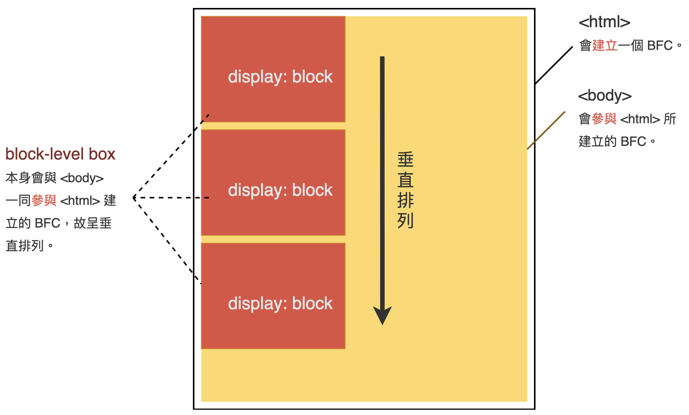
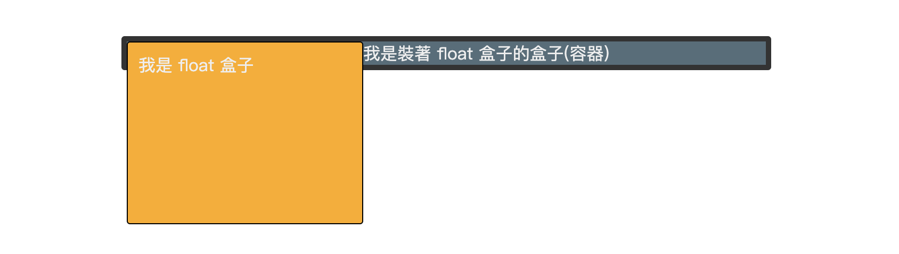
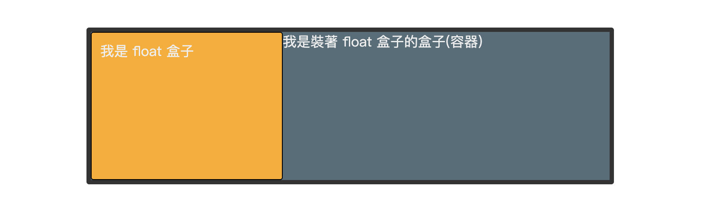
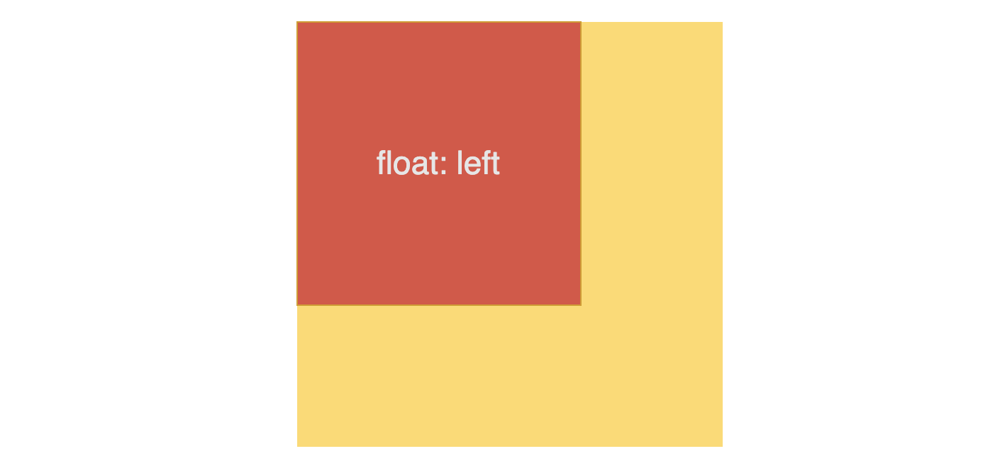
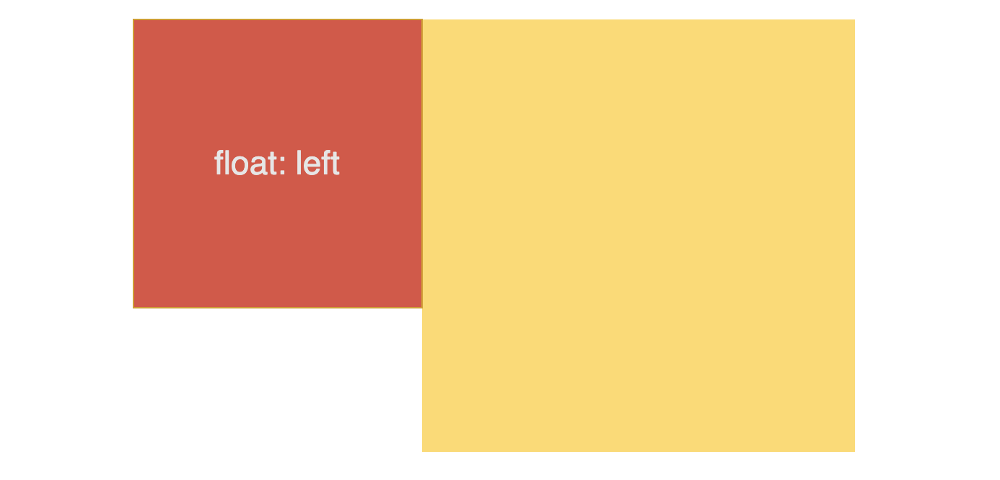

或許你沒聽過 Block Formatting Context，但你肯定有用過！其實在切版時，常常會使用到 BFC，只是你沒有意識到而已，如果能夠有意識的使用 BFC，對於版面的掌控非常有幫助。
什麼是 Block Formatting Context
如同上一篇 CSS 原理 - Formatting Context 所說，Formatting Context 指的是佈局環境，而佈局環境有許多種，不同的佈局環境會有不同的佈局規則，Block Formatting Context (BFC)是其中一種。
下方為一段 W3C 對於 BFC 的敘述：
In a block formatting context, boxes are laid out one after the other, vertically, beginning at the top of a containing block. The vertical distance between two sibling boxes is determined by the ‘margin’ properties. Vertical margins between adjacent block-level boxes in a block formatting context collapse.
In a block formatting context, each box’s left outer edge touches the left edge of the containing block (for right-to-left formatting, right edges touch).
簡單來說，處在同一個 BFC 中的元素(盒子)，會有以下現象：
-
元素(盒子)從其
containing block(包含塊)的頂部開始，一個接一個呈現垂直排列。 -
若書寫方向為預設的由左至右，則元素(盒子)會貼齊其 containing block(包含塊)左側。
-
相鄰元素(盒子)之間的垂直距離，由元素的 margin 屬性決定。
-
相鄰的 block-level box(塊級盒子)垂直方向會發生
margin collapsing(邊距重疊)。
圖示
將上述現象用圖形表示：
1 | <html> |
首先，<html> 會建立一個 BFC (先破梗了)，而 <body> 與三個 <div> 參與的是 <html> 建立的 BFC，也就是說， <body> 與三個 <div> 處於同一個 BFC 中，因此元素會：
- 呈現垂直排列。
- 可以用 margin 來推開彼此。
- 垂直方向會發生 margin collapsing(邊距重疊)，其中 margin collapsing 又分為兩種(同層元素間以及元素與其容器間)，可參考先前文章 CSS 原理 - Collapsing margins。

注意，以上現象強調的是處於同一個 BFC 裡的元素(盒子)，若元素自立門戶創建新的 BFC，則不完全適用，所以了解什麼情況會建立新的 BFC 很重要。
何時會建立 BFC
對於「什麼時候會建立一個 BFC」，其實 W3C 並沒有一個非常正式的定義，有些條件是非常不嚴謹的，而在 MDN 上則有逐一詳細列出，可供參考。
根據 MDN，以下情況的元素會創建 Block Formatting Context(BFC)：
- <html>
- float 元素
- position: absolute、fixed 的元素
- overflow: hidden、scroll、auto 的元素
- display: inline-block 的元素
- display: flow-root 的元素
- display: flex 或 inline-flex 元素的
直接子元素，即 flex items- display: grid 或 inline-grid 元素的
直接子元素，即 grid items- display: table、table-caption、table-cell、table-rowtable-row-group、table-header-group、table-footer-groupinline-table
- contain: layout、content 或 paint 的元素
- column-count 或 column-width 不為 auto 的元素
- column-span 為 all 的元素
BFC 功用
可以解決：
float元素的外層容器塌陷問題。- 元素間的
margin collapsing(外邊距重疊)問題 - float 元素與其他元素的重疊問題 (float 元素遮住其他元素)。
解決 float 元素造成外容器塌陷問題
float 元素會導致外層容器的高度塌陷(若外層容器高度為 auto 且無其它比 float 元素高的子元素)。
例如：範例連結
1 | <div class="container"> |
1 | .container { |

此時可以使外層容器建立 BFC 來恢復高度，例如在外層容器加上 overflow: hidden 或 display: flow-root。
1 | .container{ |
登愣～外層容器撐開了。

解決 margin collapsing 問題
當元素與元素之間發生 margin collapsing 時，可使元素建立 BFC 來解決 margin collapsing 的問題。
解決 float 元素遮住其他元素的問題
在先前文章 CSS 原理 - Line box 曾提到，float 元素會擠壓 line box，除此之外，float 元素還可能遮住其它元素！
如果你有用過 float，應該有遇過 float 元素遮住其它非 float 元素的情況，例如：
1 | <div class="float"></div> |
1 | .float{ |
橘色的 float 元素蓋住了黃色元素。

只要讓黃色元素建立 BFC 即可解決重疊問題，例如加上 overflow: hidden 或 display: flow-root。
1 | .box{ |

參考資源
W3C-Appendix A: Glossary
W3C-Box Layout Modes: the display property
W3C-Collapsing margins
MDN-Block formatting context